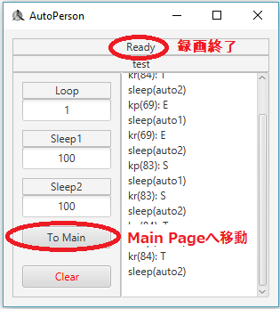

今回はキーボードとマウスの行動を録画してみましょう。
録画をする前にNewボタンを押して新しいファイルを作って下さい。
ファイル名を決めた後Createボタンを押して下さい。
ファイルが成功的に作られたらEdit Pageに移動されます。
Edit Pageにいた状態で前回設定した録画ボタンを押してください。
緑字で"recording"と出たら録画中という意味です。
録画ボタンをもう一度押すと録画が終了されます。
録画が終了されるとステータスが"Ready"に戻ります。
録画を終わらせたらTo Mainボタンを押してMain Pageに移動しましょう。
